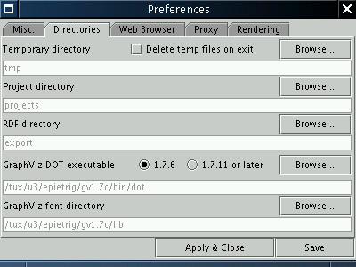

Important Note
Several people have encountered difficulties importing local RDF files in IsaViz 1.2 (this will also be true for version 2.0): the model is not loaded, and the following error message is generated:
RDFErrorHandler.error: com.hp.hpl.jena.rdf.arp.MalformedURIException: No scheme found in URI.
The source of this error is a bad Defaut Base URI in your preferences (e.g. "online"). To correct this, select Edit/Preferences, and set the Default Base URI value to blank or to the well-formed URI of your choice.
The following components are required to run IsaViz:
More detailed information is available in the following sections.
IsaViz is written in Java. The GUI is built on ZVTM, a ZUI toolkit that heavily relies on Java2D. This basically means that you will need a JVM version 1.3.0 or later.
IsaViz has only been tested with Sun's JVM, which can be found at:
http://java.sun.com/j2se/1.4/
http://java.sun.com/j2se/1.3/
A JVM 1.4.0 or later is strongly recommended since Java2D performances have been noticeably improved from 1.3 to 1.4 (read also Known problems). If you want to compile IsaViz, a JDK 1.4.x is required (IsaViz uses the ImageIO API for the PNG export feature).
ZVTM is the ZUI (Zoomable User Interface) toolkit on which is based IsaViz's GUI. It is included in this distribution (zvtm.jar). More information is available at http://zvtm.sourceforge.net
AT&T's GraphViz/dot is a tool for making hierarchical layouts of directed graphs. It is used only to compute the initial layout of imported RDF models and when the user wants IsaViz to suggest a new layout for an existing graph. It is therefore not required in order to run IsaViz, but major features will not be available if you do not install it.
GraphViz is not implemented in Java, but is available on a wide range of platforms (see Graphviz's web site for an up-to-date list):
GraphViz is not included in the IsaViz distribution, but is freely available at http://www.research.att.com/sw/tools/graphviz/
You must download version 1.7.6 (with support for SVG) or later. IsaViz only requires the DOT program. I strongly suggest using version 1.8.9 or later as you may have some problems with earlier versions when trying to import some RDF files (see Known problems).
Note: GraphViz can be installed in any location. You will be able to configure it from IsaViz's Preferences window.
HP's Jena is a Java API for manipulating RDF models. It is included in this distribution. More information is available at http://www.hpl.hp.com/semweb/index.html
Apache's Xerces-J is a java XML parser. It is included in this distribution. More information is available at http://xml.apache.org/xerces2-j/index.html
The installation procedure should be fairly quick and simple. Unpack IsaViz.zip in any location you want. This will create a directory named IsaViz which will contain the following files and directories, among others:
IsaViz\
|
|
---isaviz.cfg (configuration files where user preferences are saved)
|
|
---export\ (default directory for RDF/N-Triple/SVG and PNG files exported from IsaViz)
|
|
---lib\ (contains all JAR files required by IsaViz)
|
|
---projects\ (default directory for ISV (isaViz project) files)
|
|
---tmp\ (default directory where are stored temporary files used to communicate with GraphViz/dot)
The top-level directory also contains launch scripts for Windows (run.bat) and POSIX systems (run.sh) that should be working immediately provided that java is in your PATH.
Note: IsaViz uses Jena and Xerces-J (included in the distribution). You might want to use versions of these other than the ones included. The requirements are:
Note: GraphViz can be installed in any location. You will be able to configure it from IsaViz's Preferences window.
Once you have the following installed:
you should be able to run IsaViz by either:
The main class is org.w3c.IsaViz.Editor
The last step consists in configuring some directories. Launch IsaViz, go to Edit->Preferences, choose the "Directories" tab.
You have to choose a valid directory for temporary files (e.g. IsaViz/tmp or C:\Temp).
Then you have to tell IsaViz where to find GraphViz/dot: browse to the location of the dot executable file
(e.g. C:\Program Files\ATT\GraphViz\bin\dot.exe or /usr/local/graphviz/bin/dot).
The other directories are optional. You should point the font directory to the one containing the font you want to use for the Graph (see tab Rendering in the Preferences window).
By default, IsaViz 1.x is configured for GraphViz 1.7.11 or later (IsaViz 2.0 does not offer any choice as it requires GraphViz 1.8 or later). If you are using an earlier version, select the other option (the SVG output format changed between both versions and IsaViz needs to know which version of GraphViz/dot it deals with).
Note: if you want to add IsaViz to your CLASSPATH, you need the
following entries
(IsaViz 1.x):
(IsaViz 2.0):
In order to test your installation, you can try to import sample RDF files located in the export directory. There is also a sample ISV project in the projects directory.
Emmanuel Pietriga |